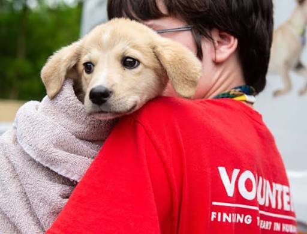
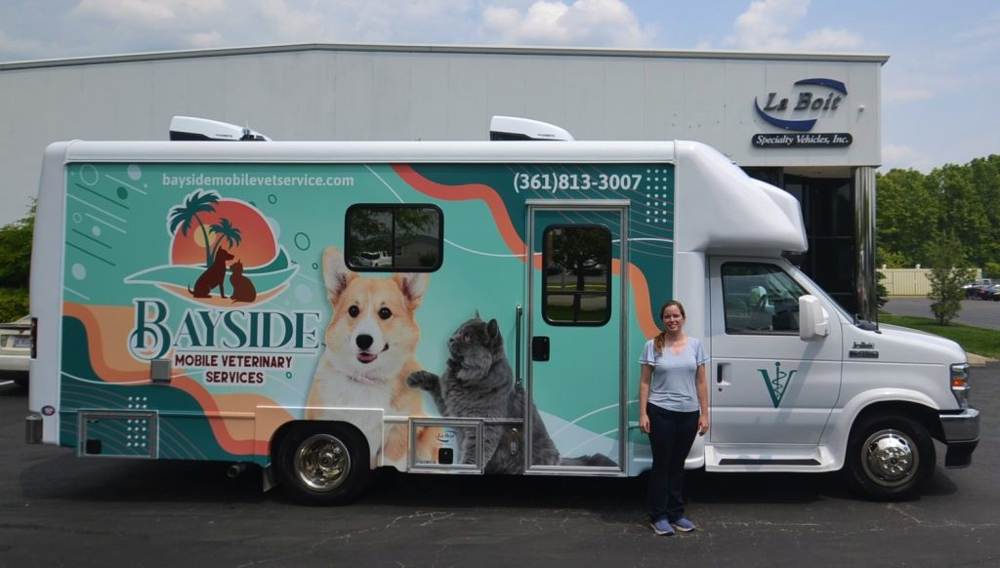

Plantão 24hResgate de Emergência
Atendemos denúncias de maus-tratos e abandono, com equipe própria e parceria com clínicas veterinárias da região.
- 120 resgates em 2025
- Voluntários: motorista e apoio de campo
Cada projeto abaixo depende de voluntários e doações pra continuar.

Plantão 24hAtendemos denúncias de maus-tratos e abandono, com equipe própria e parceria com clínicas veterinárias da região.

Um sábado por mêsMutirões mensais de castração gratuita em bairros de maior vulnerabilidade, com unidade móvel equipada.
 A cada 15 dias
A cada 15 dias
Eventos quinzenais em praças e shoppings parceiros, com acompanhamento pós-adoção pelas primeiras semanas.